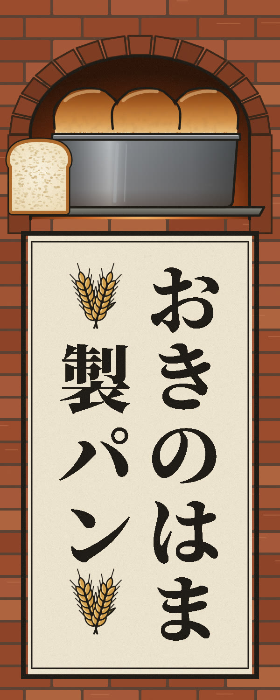
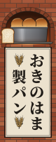

おきのはま：袖看板（縦長）
「製パン」の列の頭と尻に、麦の穂の束を付けました。字のあいだにはもう何も挟んでいません。「製パン」の3字は詰めて並べ、麦の束まで含めた列の長さを「おきのはま」とそろえています。画像を押すと実寸で開きます。

遠くから見たときの大きさ

おきのはま：決まった横長看板と店先メニュー（いまの版）


助任珈琲豆店：店先メニュー（感想をまだもらっていない物）
助任の広告で、店の前にA型の立て看板として置く予定のメニューです。